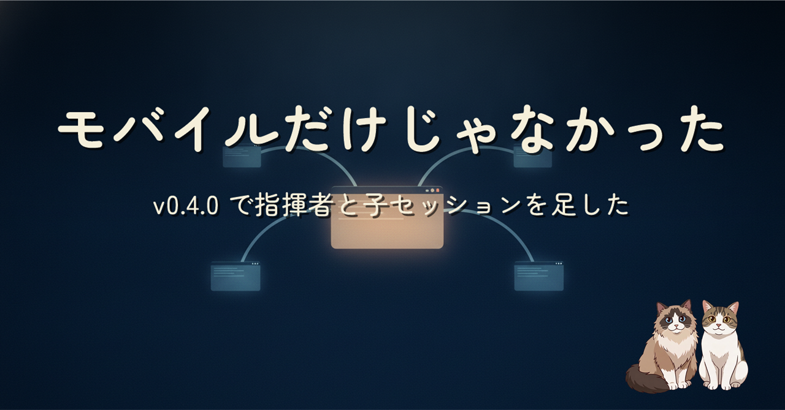
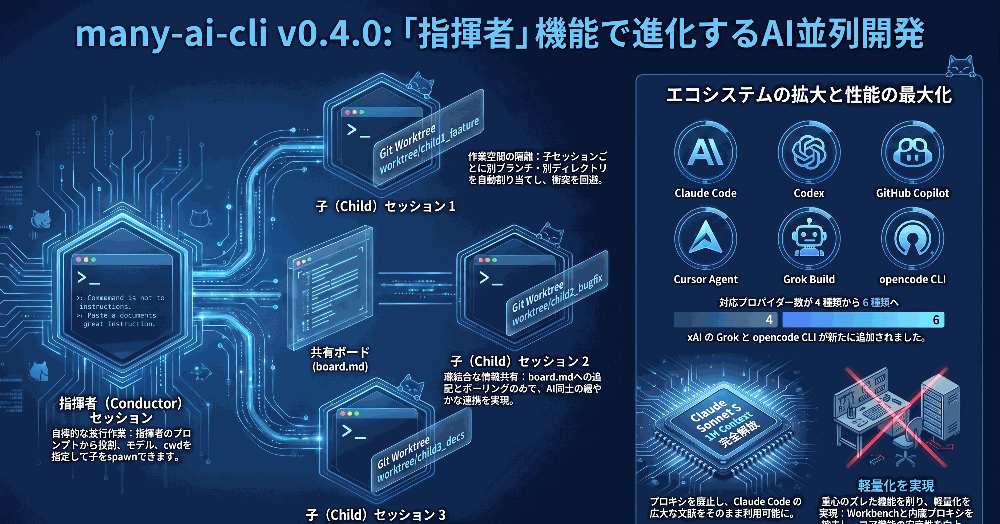
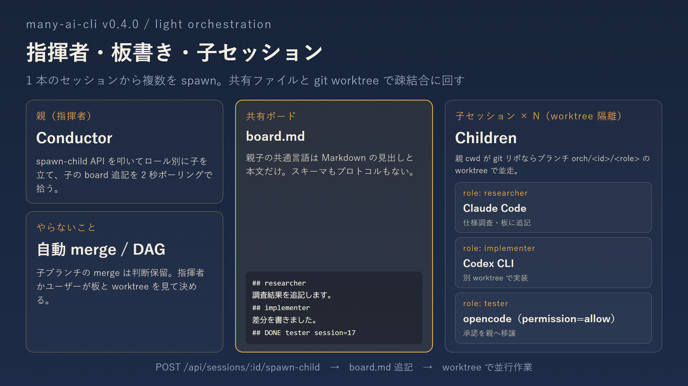
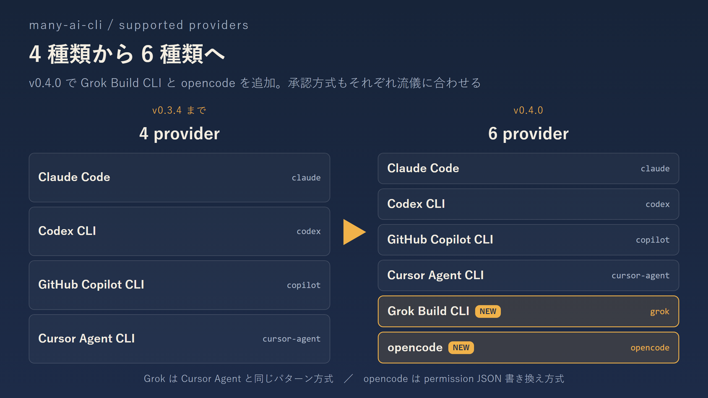

前回はスマホ画面を作り直した話でした。同じ v0.4.0 には、1 本の Claude Code を「指揮者」にして子セッションを spawn できる軽量オーケストレーション、opencode と Grok の追加、Workbench と Hub 内蔵チャットプロキシの撤去（副次効果として Sonnet 5 の 1M context が Hub 経由でも戻った）も一緒に入っています。モバイルほど画面が変わらないので話題になりにくい変更を、この 1 本でまとめて紹介します。

「並列に見張る」ダッシュボードから、「並列に働かせる」オーケストレーションへ一歩だけ進めた話です。指揮者と子セッションのやり取りは、RPC ではなく共有ファイル（board.md）と git worktree の疎結合にしました。同時に対応 provider を 4 種類から 6 種類（Grok / opencode 追加）に増やし、v0.3.0 で入れた Workbench と Hub 内蔵チャットプロキシを引き算しました。あわせて Sonnet 5 の既定 1M context が Hub 経由でも戻ってきています。

